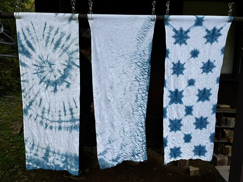
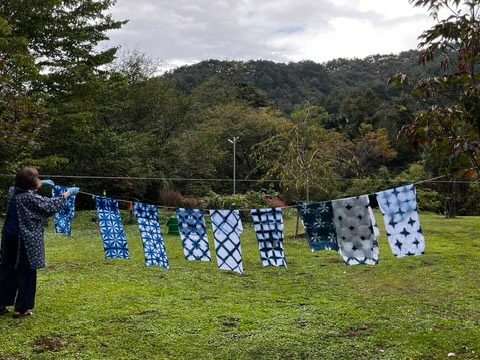

伝統文化体験の宿つたやで藍染、機織り、郷土食料理などを通じて、地域の魅力を再発見し、文化を継承する場を提供しています。
活動日： 火曜日・金曜日
開催予定： ４月末から
各体験には、地域の文化と技術を感じながら学べる貴重な体験が含まれています。すべての体験にはお茶やお菓子のサービスも付いており、体験後には心温まるひとときを過ごせます。
藍染体験： 3500円（手ぬぐい1枚付き）、5000円（Tシャツと手ぬぐい付き）
伝統的な藍染の技術を学び、手ぬぐいやTシャツに染め上げます。自分だけのオリジナルアイテムが作れます。
機織り体験： 3500円（写真立て、コースター2枚付き）
手織りの技術を学びながら、思い出に残る写真立てやコースターを作成します。
藍染＆機織り体験： 5500円（藍染と機織り体験両方を体験）
藍染と機織りの両方を楽しめるお得なセットです。どちらも体験したい方におすすめです。
竈ご飯体験： 4000円（ご飯、みそ汁、漬物）
地元の特産物を使ったみそ汁や漬物を作り、竈で炊いたご飯をみんなで囲んで楽しみます。食文化の豊かさを感じられる体験です。
もちつき体験： 3500円（持ち帰り2kg）
もち米を手作りでついて、新鮮なお餅を楽しみます。つきたてのお餅は格別です。
すべての体験には地域の伝統を学ぶ楽しさが詰まっています。これらの体験を通じて、地域文化の魅力を再発見しましょう。


体験の予約や質問がある場合、下記のボタンからGoogleフォームにアクセスしてください。